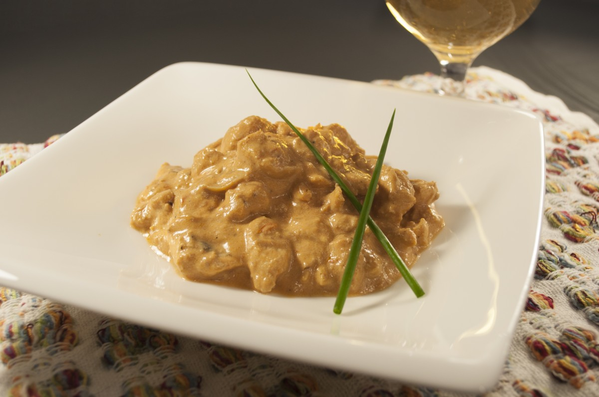

Strogonoff

Description
Aqui um passo a passo para um delicioso prato de strogonoff
Ingredientes
- 400g de frango
- 2 dentes de alho
- 2 colheres de sopa de azeite
- 150g de creme de leite light
- Sal a gosto
- Outros temperos ao gosto individual
Steps
- Primeiro corte o frango em pequenos pedaços - aproximadamente do tamanho de uma azeitona
- Em uma panela coloque o azeite o alho picado ou amassado e o sal e deixe dourar
- Acrescente o frango, coloque agua e deixe cozinhar
- Quando frango estiver cozido e com pouco caldo adicione e creme de leite e temperos adicionais se necessário
- Espere o caldo engrossar e pronto !!